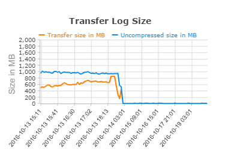

This was first published on https://www.dbi-services.com/blog/2-x-oda-x6-2s-dbvisit-standby-easy-dr-in-se/ (2016-10-21)
Republishing here for new followers. The content is related to the versions available at the publication date.
.
What’s common with Standard Edition, simplicity, reliability, high performance, and affordable price?
Dbvisit standby can be an answer because it brings Disaster Recovery to Standard Edition without adding complexity
ODA Lite (the new X6-2S and 2M) is another answer because you can run Standard Edition in those new appliance.
So it makes sense to bring them together, this is what I did recently at a customer.
I’ll not cover the reasons and the results here as this will be done later. Just sharing a few tips to set-up the following configuration: two ODA X6-2S runnimg 12c Standard Edition databases, protected by Dbvisit standby over two datacenters.
ODA X6 comes with a new interface to provision databases from command line (odacli) or GUI (https://oda:7093/mgmt/index.html). It’s a layer over the tools we usually use: it calls dbca in behind. What it does in addition is to log what has been done in a Java DB repository.
What is done is logged in the opt/oracle/dcs/log/dcs-agent.log:
2016-10-13 15:33:59,816 DEBUG [Database Creation] [] c.o.d.a.u.CommonUtils: run: cmd= '[su, -, oracle, -c, export PATH=/usr/local/sbin:/usr/local/bin:/usr/bin:/usr/sbin:/sbin:/bin:/u01/app/oracle/product/12.1.0.2/dbhome_2/bin; export ORACLE_SID=MYNEWDB; export ORACLE_BASE=/u01/app/oracle; export ORACLE_HOME=/u01/app/oracle/product/12.1.0.2/dbhome_2; export PWD=******** /u01/app/oracle/product/12.1.0.2/dbhome_2/bin/dbca -createDatabase -silent -gdbName MYNEWDB.cie.ch -sid MYNEWDB -sysPassword ******* -systemPassword ******* -dbsnmpPassword ******* -asmSysPassword ******* -storageType ASM -datafileJarLocation /u01/app/oracle/product/12.1.0.2/dbhome_2/assistants/dbca/templates -emConfiguration DBEXPRESS -databaseConfType SINGLE -createAsContainerDatabase false -characterSet WE8MSWIN1252 -nationalCharacterSet AL16UTF16 -databaseType MULTIPURPOSE -responseFile NO_VALUE -templateName seed_noncdb_se2016-10-13_15-33-59.0709.dbc -initParams "db_recovery_file_dest_size=174080,db_unique_name=MYNEWDB" -recoveryAreaDestination /u03/app/oracle/fast_recovery_area/]' Do I like it? Actually I don’t for two reasons. First reason is that I don’t want to learn new syntax every year. I know CREATE DATABASE from decades, I know DBCA for years. I just prefer to use those.
The second reason is that if you want to add a layer on something, you need to provide at least the same functionality and the same quality than the tool you call in behind. If you provide a command to create a database, then you must provide a command to delete it, even if the previous creation has failed. I’ve created a database which creation failed. The reason was that I changed the listener port, but the template explicitly sets local_listener to port 1521. Fortunately it calls DBCA and I know where are the logs. So my ODA repository has a database in failed status. The problem is that you can’t drop it (it doesn’t exist for DBCA) and you cannot re-create it (it exists for ODA). I’m not a developer, but when I write code I try to manage exceptions. At least they must implement a ‘force’ mode where errors are ignored when deleting something that does not exist.
So if you have the same problem, here is what I did:
Finally, My Workaround works and Their Oracle Support came with two solutions: create the database with another name or re-image the ODA!
But, when it doesn’t fail, the creation is very fast: from templates with datafiles, and datafiles in those very fast NVMe SSDs.
I don’t like this additional layer, but I have the feeling that it’s better than the ODA repository knows about my databases. The standby database is created with Dbvisit interface (I’m talking about real user friendly interface there, where errors are handled and you even have the possibility to resume a creation that failed). How to make it go to the ODA repository?
I see 3 possibilities.
The odacli has a “–register-database” option to register an already create database. But that does probably too much because it was designed to register databases created on previous ODAs with oakcli.
The odacli has a “–instanceonly” option which is there to register a standby database that will be created later with RMAN duplicate for example. Again this does too much as it creates an instance. I tried it and didn’t have the patience to make it work. When ODACLI encounters a problem, it doesn’t explain what’s wrong, but just show the command line help.
Finally what I did is create a database with ODACLI and the drop it (outside of ODACLI). This is ugly, but its the only way I got something where I understand exactly what is done. This is where I encountered the issue above, so my workflow was actually: create from ODACLI -> fails -> drom from DBCA -> re-create from ODACLI -> success -> drop
I didn’t drop it from DBCA because I wanted to keep the entry in ORATAB. I did it from RMAN:
RMAN> startup force dba mount
RMAN> drop database including backups noprompt;
Then, no problem to create the standby from Dbvisit GUI
I’ve created the database directly in ASM. I don’t see any reason to create an ACFS volume for them, especially for Standard Edition where you cannot use ACFS snapshots. It’s just a performance overhead (and with those no-latency disks, any CPU overhead counts) and a risk to remove a datafile as they are exposed in a filesystem with no reason for it.
However, Dbvisit needs a folder where to store the archived logs that are shipped to the standby. I can create a folder in in local filesystem, but I preferred to to create an ACFS filesystem for it.
I did it from ODACLI:
odacli create-dbstorage --dataSize 200 -n DBVISIT -r ACFS
This creates a 200GB filesystem mounted as /u02/app/oracle/oradata/DBVISIT/
Dbvisit comes with a scheduler that can start the databases in the required mode. But in ODA the resources are managed by Grid Infrastructure. So after creating the standby database you must modify its mount mode:
srvctl modify database -d MYNEWDB -startoption mount
Don’t forget to change the mount modes after a switchover or failover.
This can be scripted with something like:
srvctl modify database -db $db -startoption $(/opt/dbvisit/standby/dbv_oraStartStop status $db| awk '/^Regular Database/{print "OPEN"}/^Standby Database/{print "MOUNT"}')ODA is simple if you do what it has been designed for: run the database versions that are certified (currenty 11.2.0.4 and 12.1.0.2) adn don’t try to customize the configuration. Always test the switchover, so that you can rely on the protection. It’s easy with Dbvisit standby, either from GUI of command line. And be sure that your network can keep up with the redo rate. Again, this is easy to check from the GUI. Here is an exemple when testing the migration with Data Pump import: 
From public prices, and before any discount, you can get two ODA X6-2S plus perpetual licences for Oracle Database Standard Edition and Dbvisit standby for less than 90KUSD.
If you need more storage you can double the capacity for about additional 10KUSD for each ODA.
And if you think that ODA may need a DBA sometimes, have a look at our SLAs and you have a reliable and affordable system on your premises to store and process your data.
{kind=link}